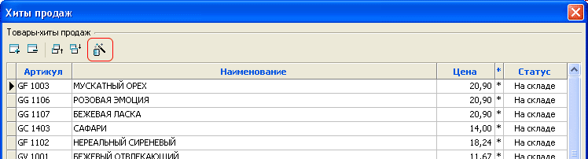
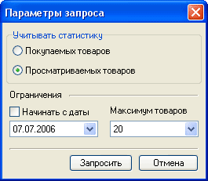
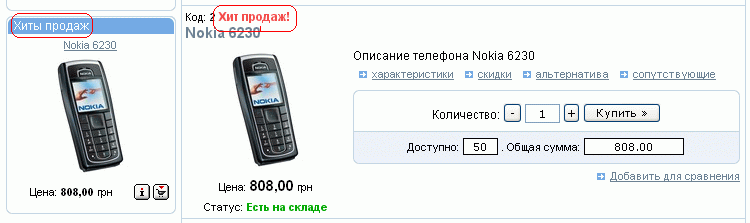

Обратить внимание потенциального покупателя на наиболее часто покупаемые товары можно, назначив товару особый статус "Хиты продаж". Имеющие этот статус товары могут отображаться на первой странице и на странице типа "Отдел с товарами" (в стандартной конфигурации - в первой колонке). Назначение товарам этого статуса производится путем добавления товара в список товаров-хитов продаж, вызываемый из главного меню "Товары - Особые - Хиты продаж".

Добавить товары в список хитов продаж можно как вручную, так и автоматически на основе статистики (если магазин уже работает какое-то время). При автоматическом формировании списка продаж появится окно для уточнения параметров, где, в частности, уточняется, на основании каких данных будет использоваться статистика, за какой период и сколько товаров необходимо получить.

Количество колонок для хитов продаж и число одновременно отображаемых хитов продаж для разделов задается на закладке "Настройки раздела" (см.Свойства разделов) отдельно для главной страницы и для страниц типа "Раздел с товарами", для страницы товара - на закладке "Страница товара" общих настроек магазина. При этом выводимые для отображения товары выбираются из всех товаров, имеющих статус "Хиты продаж" случайным образом, каждый раз по-разному, вне зависимости от их принадлежности к какому-либо разделу; порядок следования товаров в списке хитов продаж значения не имеет. В перечне товаров товары, для которых назначен статус "Хиты продаж", также выделяются соответстующей надписью:
